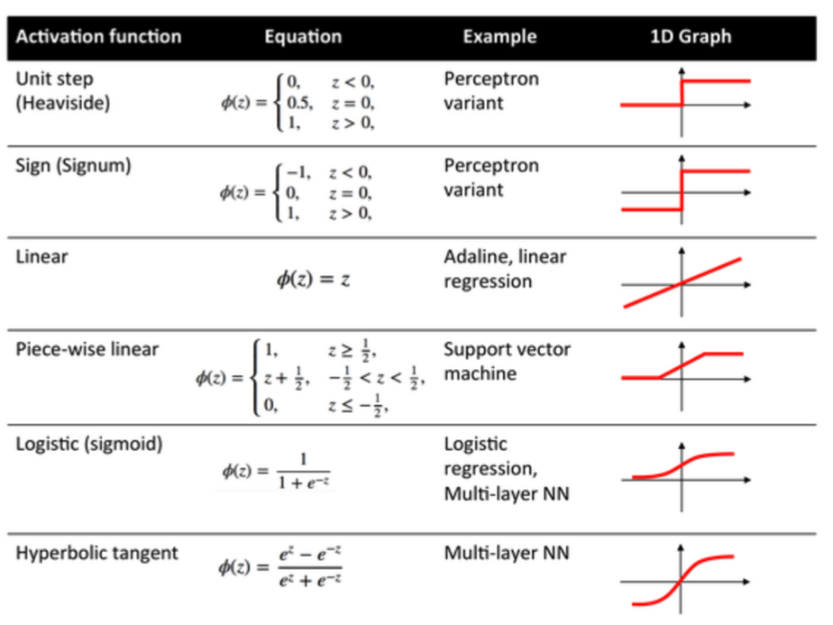

Objectives For Today
- Introduction to Advanced Machine Learning
Introduction to Neural Networks
Basically, neural nets were inspired by how our brains function:
The neuron's axos is what it uses to send signals to other neurons.
Denrites receive information from the cell body.
Synapses are sensors that receive signals from other neurons.
This is how our brains work:
- Brain sees an image through your eyes.
- Your brain recognizes fur, pointy ears, whiskers.
- Your brain then acknowledged that it is a cat (I know there are other things that identify a cat but let's keep our example simple).
Likewise, we mimic the overall behavior in our code to do the same thing:
- We scan a cat image into a computer.
- The computer notices distinct vectors in on an image. Perhaps it identified fur, pointy ears, and whiskers like a humans do.
- But unlike a human, computers are only good with numbers. So if it identifies fur, it means True or 1. Then pointy ears triggers another 1, and whiskers triggers another 1. If it doesn't notice anything, it means False or 0.
- If all three parameters are 1, we could have a function that says if all 3 parameters are 1, it is a cat and we output as True. If not, False.
- The entire system of taking inputs, and determining an output, as a single unit or entity, is called a perceptron. In-between, we have models or step-functions (activation function) to determine a result.
Of course, the example I give is simple. But if you want to classify if a skin imagery is cancerous or not, you have more than 100 million parameters to determine.
Perceptron
Actually, we are using perceptrons without realizing it:
- Logical operators
- AND, means all inputs must be True(1) to output True(1). Otherwise, False(0).
- OR, means if any of the input is True(1), output True(1). Otherwise, False(0).
Then, what is a neural network?
Layers of neurons (perceptrons) connected together to form decisions or classification of results.
Why use log regression rather simple True or False?
Because True or False gives us no room to correct and train our systems. It's either 100% correct or 0%. The highest value of a log is 1, and the lowest is 0 (remember your high school math?), and in-between are all decimals. If we know how close are we to True (1) or False (0) through decimals, we can correct models to achieve a better result.
Backpropagation
We feed errors rates into a system, then tweak our algorithms or parameters to improve accuracy. Intuitively, when you come to me to correct code, I always break it down and see what kind of errors took place. I fix an error at a time.
Similarly, this process works in deep learning. The difference is computers are mitigating errors on a larger scale.
Tensorflow Playground
Tensorflow is what we use to for machine learning purposes. It's a library developed by Google for all sorts of data science projects, especially neural networks.
Goggle has developed a playground for us to get acquainted with Tensorflow here: Tensorflow Playground
When you visit the playground, you can see a dashboard with lots of control and parameters. Let's break it down somewhat:
- The top bar is a generic control panel for training.
- Play button when your formula starts training.
- Epoch is the time transpired that the model has been working.
- Time to train a model is actually a pivotal part of ML. Of course, this is a playground, and so it's supposed to be quick, but I've heard cases where training data took months.
- Learning rate is a numerical parameter which allows the algorithm to adjust itself. Basically, it's adjusting the weight in a linear equation.
- Your school slides give an example of gradient descent, which is where the algorithm uses itself to adjust the classifier into its optimal state.
- Activation function is a mathematical function which is applied to incoming data to define an output. Usually, the outputs are binary, either True or False, Yes or No. It can get more complicated than this but we'll rest our case here:
- 
- Your school slides give a good overview of the different types of activation function that is commonly available.
- Regularization and Regularization rate is to prevent overfitting.
- L1 is called Lasso Regression.
- L2 is called Ridge Regression.
- The side bar on the left manages the data parameters.
- They don't tell us what kind of data this is, so we assume this data as random coordinates in a bi-dimensonal scale.
- Features are the dimensions you want to define in your data set. Example. supposed you want to identify cats and dogs by 2 features, height and weight.
- Hidden Layers are the set of rules you want to define to classify the data.
- Imagine the blue dots are cats and the orange dots are dogs. This data is collected in both X1 and X2 as weight and height.
- Notice that each neuron node is a singular line? It's binary classifcation, where one neuron determine disect the graph horizontally, while the rest disect it with slants.
- The default activation function here is hyperbolic tangent. Looking at the graph above, you have three distinct values, -1, 0, and 1. The white region denotes 0, while -1 denotes orange and 1 denotes blue. Zero is the boundary where you want to separate between cats and dogs.
- Why 2 hidden layers? If we remove the second layer, the output would show a "triangular shaped" output. That's because we use lines to draw, and the second layer is to smoothen the edges out for a better error approximation.
- Output is self-explantory. You want to have a visualization of how you're classifying your data.
What are you looking for in this playground?
Comparisons between different activation functions and how fast it can train your data properly.
Installing Tensorflow
- Activate your dev env in conda:
conda activate dev - Install the tensorflow lib:
pip install tensorflow - You can include the installation within your Jupyter notebook with:
!pip install tensorflow
Over the Moon on Basic Neural Networks
Let's open up the file(s) in the 01-Ins_OverTheMoon folder to get started.
Students Do: Back to the Moon
Let's open up the file(s) in the 02-Stu_BackToTheMoon folder to get started.
Getting Hands On with Model Optimization
Let's open up the file(s) in the 03-Ins_SynapticBoost folder to get started.
In ML, irregardless of whether it is deep learning or other forms of ML, it is important to:
- Weigh the features (input variables, independent variables)
- Reduce noise (removing columns or rows that might disrupt the real-world effectiveness of the model)
Take the Guesswork Out of Model Optimization
Let's open up the file(s) in the 04-Ins_AutoOptimization folder to get started.
What is hyperparameter tuning?
Hyperparameter tuning is how we should configure our model so that it performs optimally to the best results against our training and validation data sets.
This is in the hopes of deploying the best ML model/product that we can offer.
Hyperparameter tuning does not exist only in deep learning. In fact, it exists in almost all known ML models, such as:
- XGBoost
- Logistic algorithms
- And so on...
A lot of the hyperparameter tunning process can be automated where the library would brute force a bunch of configurations to find out the best accuracy to loss in your outcome.
Students Do: Giving Your Model Building a Tune-Up
Let's open up the file(s) in the 05-Stu_TuneUp folder to get started.
Break - 15 mins @ 8:05pm
Getting Real with Neural Network Datasets
Let's open up the file(s) in the 06-Ins_GettingReal folder to get started.
There could be an error on the 4th cell, where the code was:
encode_df.columns = enc.get_feature_names(attrition_cat)
There is a recent update on scikit-learn library, and they have renamed their method to:
encode_df.columns = enc.get_feature_names_out(attrition_cat)
Students Do: Detecting Myopia through Deep Learning
Let's open up the file(s) in the 07-Stu_DetectingMyopia folder to get started.